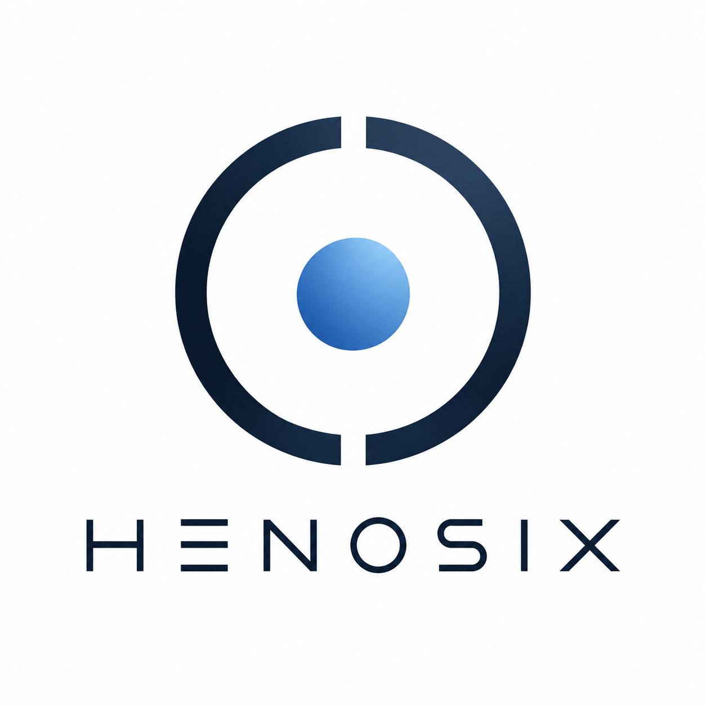

Collaborate
Development, packaging, testing, documentation or design: tell me about your skills and how you would like to contribute.
Offer to collaborate ↗
Henosix brings tools, packages and technical choices together into a coherent experience. At its heart is a package manager: Monad.
In development · The distribution is not yet available to download
Henosix is a coined name inspired by hénōsis (ἕνωσις): union, unification. Its ending evokes the Unix world. For this project, unity is a practical principle: making the different parts of the system work together with a clear, shared direction.
Design the distribution and its package management as parts of the same system, with predictable behaviour and documented decisions.
Make system changes understandable and build tools to manage installations and return to a previous state.
Distinguish goals from qualified features. Document limitations, tests and open issues.
The package manager at the foundation of Henosix.
mpkgMonad is the package management project at the heart of Henosix. Development covers TOML manifests, dependencies, builds, a hash-addressed store and generation-based activation.
Switching and rollback are part of the package manager’s development. The goal is to make system changes traceable and recoverable.
Monad is still undergoing development and qualification. Henosix is a distribution being designed and is not yet ready for everyday use.
Monad aims to bring together pacman’s straightforward operation, emerge’s flexibility in building from source, and Nix’s store and generation model.
A focused CLI and understandable operations: the goal is to make package and dependency management direct and approachable.
Manifests and recipes describe how to obtain, build and install software. Monad includes CMake and Autotools build backends.
A hash-addressed store and generation-based activation, with switching and rollback operations: tools for making changes traceable and recoverable.
TOML manifests, dependency management, source builds using CMake and Autotools, a hash-addressed store and generation-based activation form the core of the package manager’s development.
Monad is undergoing alpha development and qualification. These inspirations do not imply full compatibility with Arch packages, Gentoo ebuilds or Nix expressions. Build reproducibility and isolation require specific verification; hashes alone do not guarantee them.
I am looking for collaborators and financial support to sustain the development of Henosix and Monad.
Development, packaging, testing, documentation or design: tell me about your skills and how you would like to contribute.
Offer to collaborate ↗Your support helps fund development time and infrastructure costs.
To donate, open PayPal and send your contribution to the address below. Check the recipient, amount and any fees in your account before confirming.
alessandro.bif@gmail.com
Open PayPal ↗For sponsorships or questions about donations, please email me.
Alessandro Bifaretti · Project creator
alessandro.bif@gmail.com